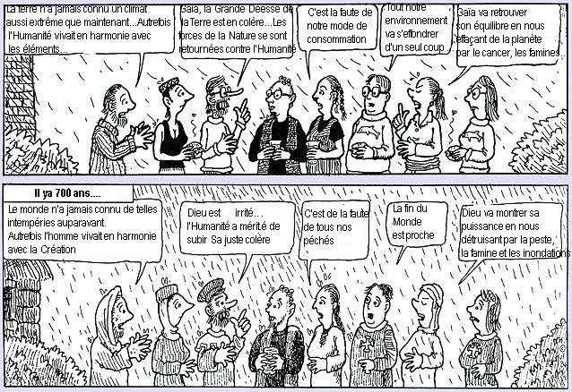

Je vous l’ai déjà dit, (ici), ami(e) lecteur(trice), il arrive que les scientifiques se trompent. Parfois lourdement et parfois collectivement, c’est à dire qu’il arrive qu’un grand nombre de scientifiques commettent ou acceptent les mêmes erreurs en même temps. Il arrive aussi, hélas, que certains scientifiques se laissent emporter par leurs convictions écologiques ou politiques. Heureusement, ce n’est pas très fréquent. Cependant, en matière de science, une idée peut être considérée comme exacte jusqu’à ce qu’elle soit démentie. Et cela peut prendre du temps, beaucoup de temps. Parfois des années. La littérature scientifique fourmille d’exemples fameux du genre de celui que je vous conte ici.
Il est vrai que la science doit prévoir. Prévoir comment va réagir tel ou tel système devant telle ou telle sollicitation. Si les résultats confirment à de nombreuses reprises ces prédictions, on estime que l’idée de départ est sans doute exacte (voir la méthode scientifique). Cela marche comme ça. Mais comme le disait Pierre Dac (qui; semble t’il, reprenait une maxime de Niels Bohr, un grand savant atomiste)
“Prévoir est un art difficile, surtout quand la prévision porte sur l’avenir”.
Par contre, quand le temps a passé et que l’avenir est devenu le présent puis le passé, il est instructif de comparer les prédictions de certains avec ce qui s’est réellement produit. On obtient ainsi une sorte de retour de prévisions (comme disent les technocrates) qui vaut fréquemment son pesant d’or. Emportés par le vent de la Pensée Unique, certains prévisionnistes se sont pris pour Mme Soleil, comme ils le font encore aujourd'hui.
Comme ce site vise à débusquer quelques croyances généreusement propagées au mépris de la discussion et de la rigueur scientifiques, il me semble approprié de vous faire partager le petit bêtisier suivant que je compléterai au fur et à mesures de mes trouvailles. Quand la force de conviction l’emporte sur la rigueur, on peut s’attendre à des énormités . En voici donc quelques unes qui ont été proférées dans un passé récent, par des scientifiques, des journalistes ou des politiques très (trop) sûrs d’eux ou de ce que leur avait fait croire la Pensée Unique!
Beaucoup sont extraites de la revue Fusion, hélas disparue (on peut lire le N° spécial sur le climat ici (merci au lecteur attentif)) mais qui était une grande pourfendeuse d’erreurs scientifiques. Elles concernent essentiellement le climat :
“Le refroidissement rapide que la terre connaît depuis la deuxième guerre mondiale est cohérent avec la pollution de l’air associée avec l’industrialisation, la mécanisation, l’urbanisation et l’explosion démographique” Michael Oppenheimer, Environmental Defense Fund
NDLR : EDF, c’est un association écologiste de l’époque, très sûre d’elle, qui affirmait exactement le contraire de ce qui se dit de nos jours. Il parait maintenant, qu’au contraire, la pollution, l’industrialisation, la mécanisation, l’urbanisation et l’explosion démographique, ça réchauffe.
Paul Ehrlich 1969, (ci-dessous à droite) ( "Le Malthus du XXe siècle")
“Dans dix ans, toute vie animale importante dans la mer aura disparu. De grandes zones côtières devront être évacuées à cause de la puanteur du poisson mort”
Du même, en 1976, soit 9 ans après :
“ Cette tendance au refroidissement va réduire la productivité agricole pour le reste du siècle”
Et encore ...:
“Je serais prêt à parier de l’argent que l’Angleterre n’existera plus en 2000.”
"En fait, le problème est qu'il ya beaucoup trop de gens riches dans le monde " Cité par the Associated Press, April 6, 1990
"Donner à la société une énergie abondante serait la même chose que de donner une mitraillette à un enfant idiot " Cité par R. Emmett Tyrrell dansThe American Spectator, September 6, 1992
Merci au lecteur qui m'a signalé les deux derniers.... A noter que les médias adoraient Paul Ehrlich...
Toujours du même Paul Ehrlich qui est devenu, depuis, un avocat strident de la lutte contre le réchauffement climatique :
Dans les années 1970 à 1980, " des centaines de millions de personnes vont bientôt périr lors des désastres dus aux fumées de New York et de Los Angeles" et aussi que " l'espérance de vie des américains retombera à 42 ans en 1980 à cause d'épidémies de cancer"...
Ou encore de Paul Ehrlich : ( source) " We must realize that unless we are extremely lucky, everybody will disappear in a cloud of blue steam in 20 years". "Nous devons comprendre qu'à moins d'être extrêmement chanceux, tout le monde disparaîtra dans un nuage de fumée bleue dans 20 ans."
...C'était en 1972.
Toujours très sûr de lui, Paul Ehrlich avait aussi prédit que certains métaux d'usage courant disparaîtraient, à court terme, du fait de l'épuisement des ressources. C'est alors qu'un économiste, Julian L. Simon, proposa un pari à Paul Ehrlich dans les colonnes du Social Quaterly Journal. Simon pariait que les prix de cinq métaux courants (chrome; cuivre, nickel , étain et tungstène) diminueraient dans les 10 années à venir. Simon gagna le pari aisément et Ehrlich lui remit la somme de 576,07 dollars qui représente la différence entre les prix combinés des métaux en questions.
De fait, et heureusement, toutes les prédictions d'Ehrlich se révélèrent erronées... Ehrlich fait actuellement des prédictions sur les conséquences du réchauffement climatique... Comme Al Gore et James Hansen aux USA, Jouzel et le Treut (avec Greenpeace) en france et Rahmstorf en allemagne...
Georges Wald 1968 , prix Nobel de physiologie et de Médecine, déclarait que la fin du monde était pour 1985. En 1975, il consentit à repousser la date jusqu'en 1990. (The progressive, Décembre p. 22). Plus tard, il revint à sa première "prédiction" de la fin du monde pour 1985.
Barry Commoner ( 1969) est un ancien candidat à la présidence des Etats-Unis. Pour lui, seul un système socialiste pourrait contrôler la technologie et notre avidité à l'exploiter. Il prédit, en 1969, que les principes fondamentaux permettant la vie sur terre auront disparu dans cinquante ans, soit en 2019.
Ces deux dernières performances en matière de prédictions sont extraites de ce lien.
Un livre (1977) : "Genesis Strategy, climate and global survival " par Stephen Henry Schneider (décédé en 2010, ci-dessous, à droite) , qui prophétisait lui aussi avec beaucoup de véhémence, les graves dommages que subirait la planète du fait du nouvel âge glaciaire. Il est amusant (?) de noter que Schneider est à présent en tête des personnalités qui supportent la théorie du réchauffement climatique généré par les activités humaines. Il réclame à cors et à cris des mesures internationales sévères pour réduire les gaz à effet de serre. Dans les années 70, il conseillait de faire des stocks de boites de conserves pour résister au refroidissement. C'est le même qui déclarait en 1989, de manière péremptoire " Pour capturer l'imagination de la population, nous devons présenter des scénarios effrayants, proférer des affirmations simplistes et catastrophiques sans prêter attention aux doutes que nous pourrions avoir. Chacun d'entre nous doit choisir entre l'efficacité et l'honnêteté."
NDLR : Il tempère cette déclaration inquiétante en ajoutant qu'il espère que ce sera les deux. Mais pour un scientifique la question de l'efficacité relève de la politique, pas de la science, et seule l'honnêteté est primordiale.
 La National Academy of Sciences (Américaine), 1975
La National Academy of Sciences (Américaine), 1975
"Le climat présente actuellement des symptômes alarmants. Il y a tout lieu de craindre que la Terre subira un refroidissement dramatique de ses températures au cours des cent prochaines années." En 2008, elle dit très exactement le contraire.
Kenneth E. F. Watt, lors d'une conférence sur la pollution et le refroidissement de la planète, "Jour de la Terre" en 1970,
repris par Lowell Ponte dans le livre intitulé “Le refoidissement” en 1976 :
"En supposant que la tendance actuelle se maintienne, la Terre aura une température moyenne plus froide de quatre degrés en 1990 et de 11 degrés en 2000. Ces chiffres sont deux fois supérieurs au modèle d’une ère glaciaire".
Du magazine américain Newsweek (28 avril 1975) , un texte à lire soigneusement parce qu'il nous rappelle quelque chose de très actuel :
 “Des signes de mauvaise augure montrent que les tendances météorologiques ont commencé à changer brutalement et que ces changements présagent une diminution radicale de la production alimentaire, avec de sérieuses implications politiques pour toutes les nations de la planète. La chute de la production de nourriture pourrait commencer bientôt (...) Les preuves de ces prédictions commencent à s’accumuler massivement (...)
“Des signes de mauvaise augure montrent que les tendances météorologiques ont commencé à changer brutalement et que ces changements présagent une diminution radicale de la production alimentaire, avec de sérieuses implications politiques pour toutes les nations de la planète. La chute de la production de nourriture pourrait commencer bientôt (...) Les preuves de ces prédictions commencent à s’accumuler massivement (...)
Pour les scientifiques, ces incidents, apparemment isolés, représentent les signaux avancés de changements fondamentaux dans le climat mondial. Le fait central est qu’après trois quart de siècle de conditions extraordinairement douces, le climat de la terre semble se refroidir. Les météorologistes ne sont pas d’accord sur la cause et la rapidité du refroidissement (...) mais ils ont presque unanimes sur le fait que cette tendance va réduire la production agricole pour le reste du siècle. Si le changement climatique est aussi profond que certains pessimistes le craignent, les famines qui en résulteraient pourraient être  catastrophiques. Un récent rapport de l’Académie des Sciences américaine (NDLR : Encore elle. Elle est actuellement à la pointe du réchauffement climatique.) avertit : “ Un changement climatique majeur pourrait forcer à des ajustements socio-économiques à l’échelle mondiale “(...) Une étude menée par Murray Mitchell de la NOAA ( NDLR : National Oceanic and Atmospheric Administration, le pendant américain de l’IPSL, l’Institut Pierre Simon Laplace des Sciences de l’Environnement dirigé par Jean Jouzel, représentant de la france au GIEC) révèle une chute d’un demi degré dans les températures moyennes de l’hémisphère nord entre 1945 et 1968 "...Plus grand sera le retard pris par les décideurs, plus il leur sera difficile de prendre les mesures nécessaires pour contrer ce changement climatique quand la dure réalité sera devant eux".
catastrophiques. Un récent rapport de l’Académie des Sciences américaine (NDLR : Encore elle. Elle est actuellement à la pointe du réchauffement climatique.) avertit : “ Un changement climatique majeur pourrait forcer à des ajustements socio-économiques à l’échelle mondiale “(...) Une étude menée par Murray Mitchell de la NOAA ( NDLR : National Oceanic and Atmospheric Administration, le pendant américain de l’IPSL, l’Institut Pierre Simon Laplace des Sciences de l’Environnement dirigé par Jean Jouzel, représentant de la france au GIEC) révèle une chute d’un demi degré dans les températures moyennes de l’hémisphère nord entre 1945 et 1968 "...Plus grand sera le retard pris par les décideurs, plus il leur sera difficile de prendre les mesures nécessaires pour contrer ce changement climatique quand la dure réalité sera devant eux".
Article de Newsweek de cette époque, ici.
Et encore, du même tonneau, des phrases que l'on répète de nos jours, dans un contexte inversé :
Lowell Ponte en 1976 : "C'est une évidence brute : le refroidissement global de la planète représente pour l'humanité le défi le plus important qu'elle ait dû relever depuis dix mille ans, sur les plans social, politique et adaptatif. Votre engagement en faveur des décisions que nous allons prendre concernant ce problème est d'une importance vitale. Il s'agit de notre survie, et de la survie de nos enfants comme de toute l'espèce humaine."
Etc....
NDLR : Il y a comme un malaise, non ? On dirait, mot pour mot le rapport actuel de Sir Stern ou le film d'Al Gore. En effet, ce sont exactement les mêmes arguments, aux chiffres près, et les mêmes prédictions que nous ressortent les grands prévisionnistes actuels avec les mêmes arguments qui nous responsabilisent par rapport à nos petits-enfants. Sauf qu’en 1975, ils prévoyaient un refroidissement catastrophique, qui ne s’est évidemment pas produit. Que penser de tout cela quand on sait que l’Académie des Sciences américaine et la NOAA sont actuellement à la pointe du combat du réchauffement climatique comme elles l’étaient déjà pour la thèse du refroidissement ? Mais, rassurez vous, elles ont été plus malignes cette fois-ci. Elles prévoient l’apocalypse dans ... seulement de nombreuses décennies. On les aura oubliées d’ici là... mais elles auront fait la une des journaux et auront récupéré des financementsde la part des politiques incultes et effrayés.
______________________________________________________________________________________________________
Enfin, toujours dans la même veine, et pour faire encore plus fort, voici un extrait d'une lettre du très honorable Président de la Royal Society anglaise :
"Une évolution remarquable du climat, encore inexplicable, a pris naissance dans les régions circum-polaires où la sévérité des froidures qui dans les siècle passés ont enfermé les mers des hautes latitudes nord dans une barrière impénétrable de glace, se sont grandement atténuées au cours des deux dernières années"
"2000 lieues carrées (approximativement 14.000 miles carrés ou 36.000 kilomètres carrés) de glace dont les mers du Groenland étaient couvertes entre les latitudes 74° et 80°N (approximativement au NNE de Jan Mayen) ont entièrement disparu dans le courant des deux dernières années."
"Les inondations qui, pendant tout l'été, ont recouvert toutes les régions allemandes où les rivières prennent leurs sources dans les neiges des montagnes, constituent une preuve évidente qu'un réchauffement est apparu..."
Quand croyez vous que cette lettre de l'honorable Président de la Royal Society à l'Amirauté anglaise a été écrite, pour lui recommander d'envoyer un navire dans l'arctique pour en savoir plus sur ces évolutions dramatiques ?
En novembre 1817, très exactement. Et à l'époque, le taux de CO2 était très minime dans l'atmosphère...et pourtant le climat se réchauffait sérieusement.
Référence fournie par Dr. Tim Ball (Canada) : Royal Society, London, Nov 20, 1817. Minutes of Council, Vol 8, pp.149-153.
La panique. L'histoire se répète...Le climat évolue et les glaces du Groenland se forment et fondent constamment. En fait, je n'aurais pas dû placer cet extrait de lettre dans le bêtisier parce qu'il avait bien raison, l'honorable Président de la Royal Society : En effet, 1817, c'était la fin du petit âge glaciaire qui a duré près de deux cent ans et le début de l'ère de réchauffement que nous connaissons encore actuellement...Plus pour longtemps, peut-être.
_______________________________________________________________________________________________________________________
De 1990 à 2001, les cyclones vont diminuer puis augmenter (voir ici, les vrais développements actuels)
Dans le rapport du GIEC de 1990, les tenants du réchauffement global prévoyant qu’on assisterait à une diminution du gradient de température entre les pôles et le reste de la planète, nous prédisaient une diminution de la variabilité du climat (diminution des tempêtes et des cyclones). Ils affirmaient :
“Aux latitudes moyennes, les orages seront plus faibles ou changeront de trajectoires et il y a des indices d’une réduction de la variabilité journalière en hiver”
Météo-France en rajoutait sur ce chapitre :
“...Comme cette différence de température (NDLR : entre les pôles et le reste) va se réduire du fait du réchauffement, les orages vont s’affaiblir”...
Malheureusement pour le GIEC et Météo-France, la réalité va les contredire en 2000-2001 (souvenez vous de la terrible tempête de la fin 1999, non prévue par Météo-France)et par la suite (Katrina en Floride). D'autre part, les dernières mesures montrent, qu'au contraire, la différence de température entre les pôles s'est accrue ( le pôle nord se réchauffe et le pôle sud se refroidit) ce qui est d'ailleurs contraire au modèle de réchauffement par effet de serre du GIEC. En outre, Le GIEC n’hésite pas à se déjuger et sans justification scientifique affirme désormais que les cyclones tropicaux vont augmenter...toujours du fait du réchauffement climatique, ce qui est exactement le contraire de ce qu’ils avaient dit peu d'années auparavant!
Encore un manque de chance pour eux : les mesures sérieuses effectuées récemment sur la surface du globe montrent qu’il n’en est rien. Tout est stable depuis 23 ans ou, même, diminue sur 85% du globe, sauf, peut-être, dans l’atlantique Nord..
Bref, leurs prévisions, il vaudrait mieux qu'ils les fassent après avoir lu les derniers résultats de la recherche.
__________________________________________________________________________________________________________________________
A tout seigneur, tout honneur. en 1980, l'ONU affirmaient que les modèles d'ordinateurs indiquaient que la population mondiale en l'an 2050 serait de 15 milliards d'habitants. Devant l'évidence, ils ont revu leurs scénarios à la baisse : maintenant, disent-ils, nous ne serons plus que de 9 milliards. Ils ne s'étaient trompés que de 60 % environ. Et on n'y est pas encore. Bravo les ordinateurs de l'ONU.
Dans le même ordre d'idée, en 1960, le célèbre "Club de Rome" a prédit que notre planète subirait une extinction totale de l'ensemble des ressources minières en 2010, accompagnée d'un désastre environnemental. Les recommandations de ce célèbre "think tank" (comme disent les américains cad littéralement : réservoir de pensée) étaient qu'il fallait ramener à zéro la croissance de la population et la production industrielle de la planète. C'était la fameuse idée de la croissance zéro dont doivent encore se souvenir les plus seniors d'entre nous... Beaucoup d'activistes écologistes se réclament encore de ces mêmes idées ... d'où le bannissement du CO2 à tout prix.
__________________________________________________________________________________________________________________________
James Lovelock est l'inventeur de la théorie dite "GAIA" ( le nom originel de la Terre). Selon lui, (et aussi, malheureusement, Hubert Reeves) et en bref, la Terre (c'est à dire GAIA) est un organisme vivant dont l'homme n'est rien d'autre qu'un virus. JL en rajoute une couche sur les Al Gore, Sir Stern et Nicolas Hulot en déclarant récemment (en Janvier 2006) dans le journal anglais 'The Independant" que, du fait du réchauffement climatique, : " des milliards d'entre nous périront et quelques rares couples d'humains reproducteurs survivront seulement en Arctique où le climat sera tolérable", vers la fin du XXIème siècle ...
Pour James Lovelock, la température augmentera de 8°C dans les régions actuellement tempérées ce qui supprimera toute possibilité de survie du fait de la disparition de l'agriculture...
NDLR : Brr.!! James Lovelock devrait se réjouir : le réchauffement climatique va enfin tuer les hommes-virus. Bon. Rassurons nous en remarquant qu'aux toutes dernières nouvelles (début février 2007) , les prévisionnistes les plus pessimistes du GIEC (IPCC en anglais), sont revenus à des prédictions plus raisonnables de +3°C après être passés par un épisode à +6°C. De même la mer montera (soit 42cm/100 ans) deux fois moins que prévu dans le précédent rapport. En attendant encore un peu, on finira pas réaliser que ces prédictions alarmistes valent celles de ceux qui, comme l'Académie des Sciences Américaine (dont l'ancien président, Frederik Seitz est, lui, un fervent opposant à l'effet de serre.), la National Oceanic and Atmospheric Administration, Paul Ehrlich, Stephen Schneider, Lowel Ponte et Kenneth Watt, nous prédisaient, dans les années 70, un âge glaciaire pour l'année 2000, que l'Angleterre disparaîtrait et que les poissons morts empuantiraient les plages, que les épidémies de cancer tueraient la moitié des américains, qu'il fallait prendre des mesures et sauver nos enfants et tous les humains en prévision de l'apocalypse... qui ne s'est jamais produite, comme vous le savez.!
Note : Septembre 2007 : James Lovelock a modéré son discours en affirmant que rien n'était perdu, que les problèmes pouvaient être réglés, grâce à sa dernière invention avec laquelle il espère obtenir le méga-prix Virgin-Branson. Allez voir cette page pour en savoir plus...
Les rayons N à l'honneur ... (2007)
Comme je vous l'ai dit dans l'entête de cette page, l'examen des données historiques est particulièrement riche en enseignements sur le comportement humain et tout spécialement en matière de Sciences...
Mais qui sera jamais prêt à tirer des leçons de l'Histoire ?
La petite histoire (authentique) (source) que je vais vous raconter brièvement, nous ramène à l'aube du XXème siècle. Elle est très instructive sur le comportement du milieu scientifique et aussi sur celui du monde politique. Le parallèle avec ce qui se passe à l'époque actuelle est assez tentant.
Elle m'a été signalée par un ami lecteur Suisse que je remercie chaleureusement.
La fin du XIXème siècle et le début du XXème ont été des périodes particulièrement fécondes pour la Science. Ainsi, le physicien Allemand Wilhelm Röntgen avait découvert les rayons X en 1895. Henri Becquerel découvrit la radioactivité naturelle en 1896.
C'est dans ce contexte, particulièrement riche en découverte de rayonnements de toutes sortes qu'a travaillé le professeur René Blondlot de l'Université de Nancy. René Blondlot n'était pas un débutant. Loin de là. Il était un expérimentateur confirmé. Ses travaux précédents sur les rayonnements électromagnétiques lui avaient valu tous les honneurs et récompenses auxquelles peut prétendre un homme de science : Plusieurs prix de l'Académie des Sciences dont il était devenu membre correspondant, légion d'honneur, élu membre de deux sociétés savantes helvétiques en 1903 etc. Bref, René Blondlot était, sans aucun doute, un scientifique dont la crédibilité (comme on dit maintenant) était indiscutable.
Dans la ligne directe de la découverte des rayons X, René Blondlot chercha à les polariser, tout comme on peut polariser la lumière. C'est au cours de ces travaux qu'il remarqua un phénomène curieux : Les rayons X semblaient augmenter la luminosité d'une petite étincelle générée par un arc électrique. placé devant le faisceau. Ayant éliminé, (selon lui), toutes les autres causes possibles pour expliquer ce phénomène, il déclara, (par une communication à l'Académie des Sciences du 2 février 1903), la découverte d'un nouveau rayonnement qu'il baptisa "Rayons N " (N pour Nancy). Malheureusement pour lui (et beaucoup d'autres), il fut démontré peu après que les rayons N n'existent pas...
La durée de vie de l'histoire des rayons N fut très brève. Environ un an.
Mais cette courte période suffit pour que l'establishment scientifique, politique et médiatique, démontre tout son savoir faire en matière de crédulité et de popularisation de fausses nouvelles...
C'est ainsi que René Blondlot, dont l'esprit critique semblait s'être assoupi, publia toute une série d'articles, tous pris très au sérieux, sur les propriétés quasi- magiques de ces rayons .. qui n'existent pas. Ces rayons pouvaient être créés par une grande diversité de sources aussi variées que du bois comprimé, un manchon auer etc... Ils avaient, affirmait-il, la propriété d'agir sur l'acuité visuelle, ce qui intéressa les collègues médecins de l'Université de Nancy Ces derniers démontrèrent aussitôt que les rayons N pouvaient être émis par la matière vivante. Des collègues physiciens renommés (jusqu'au fils de Becquerel) rejoignirent les travaux de Blondlot. En janvier 1904, Blondlot mesura la longueur d'onde de ces rayons N qui venaient ainsi prendre leur place dans la série des nouveaux rayonnements. Aux rayons N viennent s'ajouter les rayons Ni qui ont des propriétés opposées à celles des rayons N, ce qui permet, en les mélangeant, d'observer tout et son contraire. Bref, à cette époque, plus personne ne doutait ni de l'existence des rayons N, ni de leurs étonnantes propriétés qui semblaient quasi-universelles. Les effets des rayons N furent observés par, au moins, quarante personnes, et analysés dans quelques trois cents articles rédigés par une centaine de scientifiques et docteurs en médecine. Le laboratoire de Blondlot reçut la visite de nombreuses personnalités scientifiques du monde entier. C'était la consécration et de nos jours on dirait qu'il y avait un "consensus" sur l'existence et les propriétés des rayons N.
Cependant quelque scepticisme se fit jour pendant l'automne 1904. Mais les rares sceptiques qui ont osé braver le "consensus" n'allèrent pas jusqu'à remettre en doute l'existence même des rayons N qui semblait incontestable. Ils se contentèrent d'en contester l'origine physiologique. Le IVème Congrès International de Physiologie de septembre 1904 nia toute possibilité du corps humain d'émettre des rayons N....
C'est alors qu'intervint Robert Wood dont vous connaissez le sens critique aiguisé si vous avez lu la page sur l'effet de serre. Grand spécialiste de rayonnements (il est l'inventeur du verre et de la lampe de Wood), il vint visiter, comme tant d'autres, le laboratoire du professeur Blondlot à la fin 1904. Pour démontrer l'inexistence du fameux rayon N, Wood utilisa une simple supercherie : Au cours d'une expérience dans l'obscurité, il subtilisa le prisme en aluminium qui était censé réfracter les rayons dont Blondlot et son assistant observaient les effets. Ces derniers ne virent aucun changement dans les résultats de leurs mesures... C'en était fini des rayons N qui tombèrent immédiatement dans l'oubli à l'étranger et... quelque temps après en France.
Cela n'empêcha pas les autorités universitaires et politiques d'élever, par la suite, Blondlot au grade d'officier de la légion d'honneur et de le couvrir d'honneur et de félicitations. Il est vrai que Blondlot était de bonne foi, sans doute victime de son auto-suggestion, ce qui est assez fréquent.
Conclusion à tirer de cette (triste) histoire :
Le fameux "consensus" n'apporte aucune garantie sur l'exactitude d'une théorie.
Que se serait-il passé si le "sceptique" , comme l'on dit maintenant, Robert W. Wood n'était pas intervenu de manière décisive ? Combien de temps encore aurait duré ce "canular" entretenu par un grand nombre d'autres scientifiques, tout aussi éminents, et qui participaient au "consensus" ?
Quant à Robert W. Wood, savez vous ce qu'il a dit, en 1909, à propos de l'effet de serre de notre planète, prôné par Arrhénius et un très grand nombre de successeurs ? Ceci :
""Il en résulte qu'il est nécessaire d'être précautionneux quant au piégeage du rayonnement (NDLR : infra rouge) en concluant que la température de la terre est affectée par l'atmosphère. Les rayons solaires traversent l'atmosphère, réchauffent le sol qui, à son tour, réchauffe l'atmosphère par contact et courants de convection. La chaleur ainsi reçue est stockée dans l'atmosphère et y reste à cause du très faible pouvoir radiatif des gaz. Il me semble très douteux que l'atmosphère puisse se réchauffer notablement en absorbant les radiations (NDLR: infra rouges) émises par les sol, même dans les situations les plus favorables."
On ne peut mieux dire que l'on ne croit pas à l'effet de serre. Il est vrai qu'on a fait des progrès depuis 1909 : Nous avons maintenant... les prédictions des ordinateurs. C'est tellement opaque que Robert W. Wood lui-même n'arriverait pas à prouver qu'ils se trompent.
Février 2008
L'îlot de Takuu (ou Mortlock) est l'un de ces charmants atolls à la forme caractéristique en croissant de lune ou en cercle, composé d'une simple bande de terre sablonneuse, situé sur la cote Est de la Papouasie (Nouvelle Guinée). A marée haute, la terre ne dépasse que de 1 à 2m la surface de l'océan. Cet îlot et une douzaine d'atolls du même type hébergent quelques 600 habitants dont les oreilles sont évidemment sensibles au moindre souffle des prophètes (comme Al Gore et James Hansen de la NASA) qui prévoient des taux de montée (+10 à 20 mètres) des océans du fait du réchauffement climatique.
On imagine aisément que l'îlot Mortlock constitue un morceau de choix pour les organisations écologistes en mal de propagande et pour les revues qui leur sont tout dévouées. Ces dernières peuvent tartiner à loisir, avec photos dramatiques à l'appui, sur le sort de ses malheureux habitants menacés par la débauche énergétique des pays développés ...
Cela a été le cas de la revue, autrefois scientifique, et bien connue des Francophones qui s'appelle "Science et Avenir". Cette revue est l'alter ego de la très connue "Science et Vie" qui s'enorgueillit probablement d'avoir publié un numéro spécial tout particulièrement catastrophiste (Science et Vie Spécial Climat) en 2007. Ce dernier restera dans les annales et sera probablement un jour à l'honneur comme l'est actuellement le fameux numéro du magazine américain Newsweek (du 28 avril 1975) qui nous annonçait, en 1975, la venue d'un petit âge glaciaire pour les années suivantes avec des conséquences dévastatrices pour la survie de l'Humanité. Tout cela, bien sûr, sur la foi de "grands scientifiques" consultés pour l'occasion... En fait de refroidissement, on a été servis.
Dans la lignée de l'hebdomadaire Newsweek, la revue "Sciences et Avenir" du mois de septembre 2000, se référant aux travaux du Professeur Richard Moyle de l'Université d'Auckland, nous annonçait l'engloutissement définitif de l'îlot Mortlock, dès le printemps 2001 (admirez la précision.) ...à cause du réchauffement climatique, bien entendu.
Comme vous l'imaginez, les affirmations du Professeur Richard Moyle créèrent un grand émoi dans la région. Si l'îlot de Mortlock sombrait, d'autres sombreraient aussi. Des réunions de crises furent organisées pour prévoir l'évacuation des habitants, la mise en place de digues etc. Tout cela, bien entendu en maudissant haut et fort, les Etats-Unis d'Amérique et les pays développés que l'on dit responsables de tous ces malheurs à cause de leurs rejets de CO2 et auxquels on réclamerait évidemment, une substantielle aide matérielle, comme l'ont d'ailleurs fait les habitants de Tuvalu. Vous trouverez ici un exemple du compte rendu d'une de ces réunions qui s'est tenue en Nov. 2000 à Mortlock (Takuu). On y verra, à la fin, les liste des objectifs de la réunion : Prélever de fonds, sensibiliser les îliens au réchauffement climatique et faire de la pub pour l'ONG en question...Certains ne perdent pas le Nord.
Nous sommes actuellement à la veille du printemps 2008, soit exactement 7 ans après la date prévue pour l'engloutissement définitif de Mortlock qui devait immanquablement se produire au printemps 2001. Grâce à Dieu, l'îlot est toujours là et ses habitants aussi...
Et de fait, les chiffres officiels de la montée des eaux des océans qui se poursuit à allure constante depuis près de deux cent ans sont seulement de +1,3 mm à 1,6mm/an selon les dernières mesures effectuées. Au vu de ces chiffres, les habitants de Mortlock ont donc encore du temps devant eux... En réalité, le seul et réel danger qui guette cet atoll comme d'autres de la région, provient du fait que cet archipel se trouvent exactement à la rencontre des plaque tectoniques pacifique et australienne. Comme le savent tous les géologues de la planète, le lieu de rencontre de deux plaques tectoniques est propice aux mouvements sous marins et aux tremblements de terre. Mais on peut se rassurer (un peu) en se disant que ces atolls sont là depuis des centaines ou des milliers d'années, sinon plus encore, et que nul ne sait quand les plaques tectoniques se mettront à bouger.
Une question se pose (comme elle aurait dû se poser aux éditeurs de "Sciences et Avenir" du mois de septembre 2000) :
Mais qui est donc le professeur Richard Moyle qui estimait à 20cm/an (c'est à dire à quelques100 fois le taux du GIEC) la hausse des océans et dont les affirmations, démenties par les faits, ont créé la panique sur l'îlot de Mortlock et les îlots voisins en cette fin d'année 2000 ? Le Professeur Richard Moyle qui a convoqué les médias pour venir filmer sur place, sans doute pour sensibiliser les habitants, appartient effectivement à l'Université d'Auckland où il exerce l'honorable fonction d'ethno-musicologue spécialisé dans la musique de cette région. S'il est certainement un grand expert dans ce domaine, on peut quand même s'interroger sur son degré de crédibilité quant il s'agit de faire des prévisions sur l'engloutissement des îlots de Papouasie.
Ceci étant dit, on comprend le souci du professeur Moyle qui a trouvé dans cette région un patrimoine musical d'une richesse exceptionnelle. Richard Moyle souhaitait sauver les habitants de ces atolls et leur culture musicale. C'est une démarche estimable. Ce qui l'est moins, c'est de persuader les habitants de ces îlots soit-disant en perdition que tout ça, c'est de la faute de l'effet de serre et aux méchants industriels des pays développés, alors que c'est faux. Ce qui l'est encore moins, c'est de répercuter des déclarations alarmistes et invérifiées dans la presse internationale, en mettant une fois de plus en cause, et à tort, l'effet de serre du CO2 anthropique.
On attend toujours des excuses de la part des journalistes en question... On peut rêver.
15 Jan. 2009 : Comme vous l'avez constaté, le bêtisier est plus spécialement réservé aux prédictions apocalyptique qui ne se sont pas réalisées. Le bonnet d'âne, lui, traite des actualités où l'absurde, la mauvaise foi, l'aveuglement et la bêtise, se font une concurrence acharnée... souvent pour le plus grand bonheur de nos zygomatiques.
S'agissant du bêtisier, je ne peux résister au plaisir de vous offrir cette perle que m'a fait connaître un de mes lecteurs et amis que je remercie pour l'occasion.
Nous étions en 1989. C'est à dire, il y a exactement 20 ans. Et on faisait des prévisions à 10 ans.
Après une période inquiétante de refroidissement qui avait duré de 1945 à 1977 environ et qui avait suscité les craintes de certains scientifiques et de l'Académie des Sciences US quant à la survenue d'un nouvel âge glaciaire (voir ci-dessus, et notamment, le fameux article de Newsweek de 1975), en 1988; James Hansen (le pape du réchauffisme actuel avec Al Gore) avait alerté la planète, via le Congrès Américain, des dangers d'un réchauffement climatique dû au CO2. 1988 était une année propice pour Hansen, parce que ce fut une année particulièrement chaude aux Etats-Unis qui prolongeait, depuis 11 ans environ, une période de réchauffement succédant à une longue période froide. Il n'était pas très hasardeux de parier sur un réchauffement à venir, comme le fit J. Hansen.
On basculait d'un armaggedon climatique dans une autre...sans se poser de questions et en oubliant le passé récent, bien entendu.
Comme vous vous en doutez, compte tenu de leur comportement actuel, les médias et l'ONU (qui est le père tutélaire du GIEC ) saisirent la balle au bond...
Notre chaîne publique Nationale, Antenne 2, ne fût pas en reste en matière d'alarmisme, comme elle l'est d'ailleurs restée aujourd'hui bien qu'elle se soit fait distancer, dans ce domaine discutable, par TF1 et, surtout, par la France 5.
Je vous invite donc à voir et à écouter cet extrait savoureux d'un journal télévisé présenté par Henri Sannier en Juin 1989, sur Antenne 2.
Il vous suffit de cliquer sur l'image ci-contre et d'attendre quelques instants que la vidéo se charge. Ce lien conduit sur le site de l'INA.fr qui conserve des archives télévisuelles....
Pour ceux qui, pour des raisons techniques ne pourraient voir ce document, ce qui serait dommage, en voici quelques extraits :
Henri Sannier : "Avant de développer tous ces titres, arrêtons nous quelques secondes sur une information qui nous arrive en droite ligne de New York. Si l'on en croit le Directeur du Bureau de l'Environnement des Nations Unies à New York, plusieurs pays pourraient disparaître sous les eaux d'ici dix ans. (NDLR c'est à dire avant 1999.), si le réchauffement de la planète se confirme".
"Gardons nous, bien sûr de dramatiser mais soyons très vigilants" ajoute Sannier avec son célèbre sourire carnassier (souvent en mi-profil).
Succède à cette déclaration pour le moins inquiétante, un blanc télévisuel (l'enregistrement de Laurent Massardier ne passe pas) agrémenté d'un "pas de panique, ça arrive." de Sannier, assez cocace dans ce contexte... Laurent massardier s'adresse alors aux téléspectateurs :
" Il fait chaud ou il refera chaud. Le réchauffement de la terre ... (NDLR : ici quelques photos d'accortes pinups en jupes courtes et en maillot) risque d'avoir des conséquences dramatiques d'ici la fin du siècle. Dans 10 ans seulement. " (NDLR: ici un tentative d'explication de l'effet de serre d'un extraordinaire naïveté dans lequel Massardier confond allègrement pollution par aérosols et CO2, avec des vues de cheminées fumantes et crachant des particules.. qui refroidissent le climat ). Massardier poursuit : "Avec la fonte de la calotte glaciaire, -conséquence directe-, le niveau des mers pourrait s'élever de 1 mètre ce qui serait suffisant pour inonder des zones entières des cinq continents." (NDLR : suit une description catastrophique, avec photos genre "Al Gore" à l'appui) de ce qui pourrait arriver au Bangladesh," aux Maldives, aux Seychelles, aux Caraïbes, aux Pays Bas et bien d'autres nations insulaires et de basse altitude risquent d'être pratiquement englouties" Et l'extrait archivé s'achève sur un petit film qui montre un original (anglais ?) en chapeau melon, conduisant paisiblement une voiture de collection à travers la lagune couverte d'eau entourant Venise. Ceci accompagné du commentaire "Et que deviendrait Venise déjà bien menacée ?"
Nous étions en 1989. Ce n'était que le début d'une longue et obsédante campagne télévisuelle qui s'est poursuivie et amplifiée jusqu'à nos jours.
En 1989, L'ONU nous prédisait déjà l'apocalypse pour la fin du siècle ...dernier.
Comme vous le savez, il ne s'est strictement rien produit de ce qui était annoncé. Même 20 ans après. Sans compter que la fonte de la calotte de mer glacée de l'arctique est incapable de faire monter le niveau des océans et que l'antarctique s'est renforcé, les mers ne sont montées que de quelques misérables cm comme elles le font depuis des siécles, au lieu d'un mètre en 10 ans annoncé par le représentant de l'ONU. Le Bangladesh a vu son golfe se renforcer par les alluvions. Les Maldives, les Seychelles, les Caraïbes, les Pays Bas n'ont pas été envahis, pas plus, d'ailleurs que l'île de Takku (ci-dessus) dont l'engloutissement définitif était prévu pour 2001. Et depuis 1998, c'est à dire depuis 10 ans, la température globale a stagné et se trouve à la baisse très nette, depuis au moins 2 ans (voir les indicateurs).
Je rappelle, au passage, que l'Environnement à l'ONU ( l'UNEP, tutelle du GIEC) était piloté, en 1989, par l'incontournable Maurice Strong, l'auteur de nombreuses citations apocalyptiques et aussi l'organisateur du protocole de Kyoto. Strong s'est récemment expatrié en Chine parce qu'il est poursuivi pour détournement de fonds (affaire "pétrole contre nourriture") par les USA.
A titre exceptionnel, et à la demande de quelques uns de mes lecteurs, j'ai décidé de créer le "Prix Philipulus" que j'attribue, pour l'occasion, au Directeur du bureau de l'Environnement de l'ONU en 1989 (Maurice Strong, peut-être, photo ci-contre), à la chaîne Antenne 2 et à ses journalistes qui ont fait preuve de beaucoup de professionnalisme en matière de prévision et de sens critique..
Tout le monde se souvient du prophète de "l'Etoile Mystérieuse" de Tintin. Avec une barbe, ce serait assez ressemblant, je trouve...
